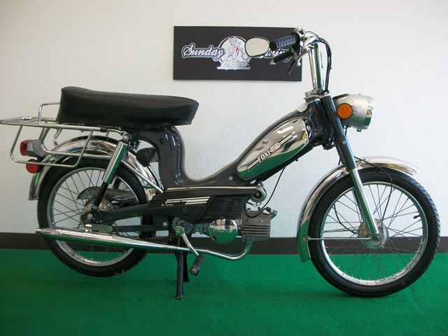
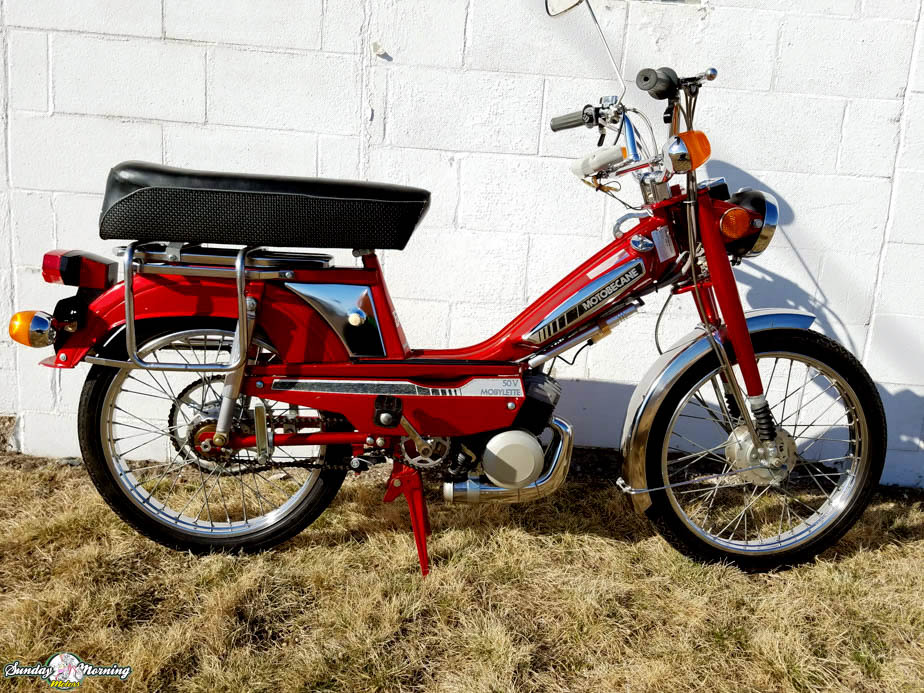
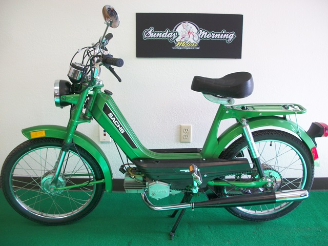

The cave you fear to enter holds the treasure you seek.
— Joseph Campbell

1977 Foxi Sparta
This Foxi is also known as a Foxi Sparta. Sparta was a moped manufacture out of Holland. Sparta designed and produced the GT for United Moped to import to the US market.

1979 Motobecane 50v
The Mobylette 50v is arguably the most popular model by the Frech vintage moped manufacturer Motobecane.

Card title
The Westlake is a quality built Sachs model and was produced in West Germany in a partnership with the DKW/Hercules Co. who supplied the well engineer chassis and assembled the bikes along with other models like the Balboa, Suburban, Prima and G3.